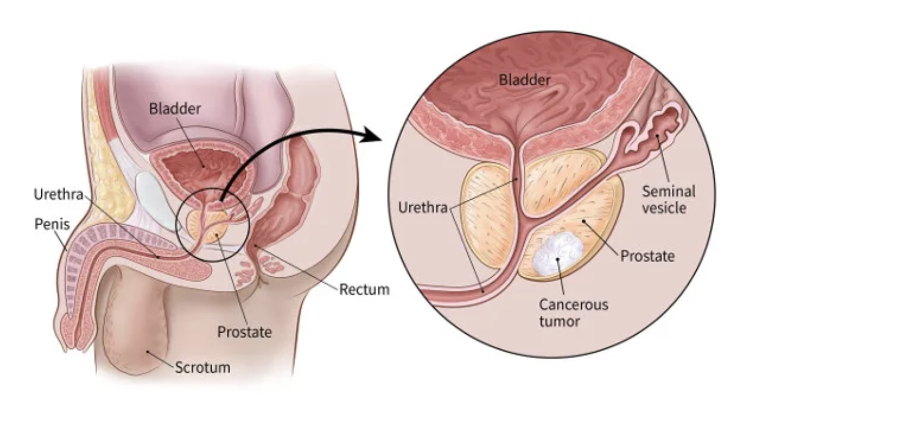

This involved taking a blood test that will measure the levels of PSA which is a protein made by cells in the prostate gland. PSA is primarily comprised of semen but you can also find small traces of it in the blood. The higher the levels, the higher the chances of prostate cancer or prostate-related conditions. However, it is important to note that no set cutoff point can tell for sure if a man does or does not have prostate cancer. The test involves just a simple blood draw done at a clinic.
Involves a healthcare provider or doctor inserting a gloved, lubricated hand into the rectum in attempts to feel for abnormal bumps or hard areas on the prostate that could indicate prostate cancer. It may cause brief, mild discomfort.
